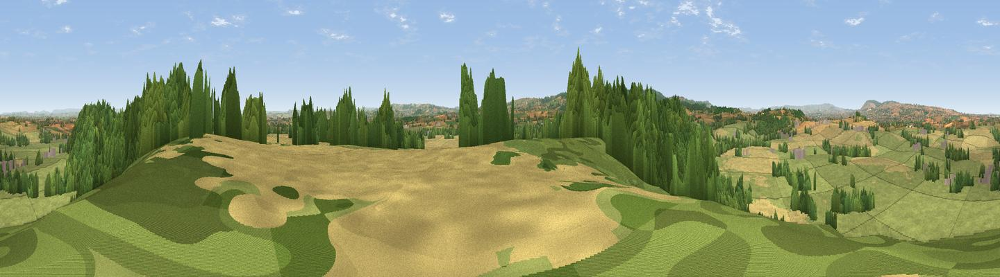

Crimson Hill
#10793 in England · top 25% of its area beats it · near WrantageWhere it is
The exact computed spot (ST 30866 21543). Click the marker for map links.
The view, rendered

A 360° render of this exact spot computed from the terrain model, tree cover and land cover — summer colours, afternoon light, calibrated against photographs of famous viewpoints. Real trees, hedges and buildings will differ in detail.
The panorama
Grey silhouette: terrain skyline in each direction (720 bearings, Earth curvature and refraction included). Dashed green: skyline with trees (+15 m) and buildings (+8 m) as obstacles. Blue strip: how far the ground is visible on each bearing.
Where the view opens
Wedge length = distance to the farthest visible ground on that bearing (vegetation-aware). Rings at 10, 25 and 50 km.
What fills the view
60% grassland · 25% woodland · 14% cropland ·
Angular shares of the visible panorama (visual magnitude), not map area. Landscape diversity 0.42 (0–1 Shannon).
Key numbers
More beautiful places nearby
The staircase of upgrades: each row has a higher view potential than everything closer. Driving times are estimates from straight-line distance, calibrated against real road routing — check an actual route before setting out.
| Place | Direction | Drive | Score |
|---|---|---|---|
| Viewpoint near Curry Mallet | NE · 3 km | ~6 min | 68.0 |
| Viewpoint near Buckland St. Mary | SSW · 7 km | ~14 min | 72.2 |
| Viewpoint near Buckland St. Mary | SSW · 7 km | ~14 min | 77.3 |
| Viewpoint near Hewish | SE · 15 km | ~27 min | 78.5 |
| Cothelstone Hill | NW · 16 km | ~29 min | 82.1 |
| Viewpoint near West Bagborough | NW · 18 km | ~31 min | 84.3 |
| Wills Neck | NW · 20 km | ~34 min | 85.7 |
| Viewpoint near Holford | NW · 25 km | ~41 min | 85.9 |
50.98911, -2.98636 · source: dobih hill · position refined by local search. Computed location — check access rights before visiting.